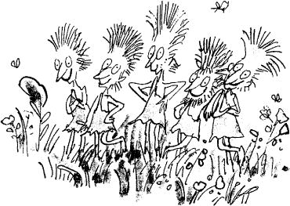

‘An important room, this!’ cried Mr Wonka, taking a bunch of keys from his pocket and slipping one into the keyhole of the door. ‘This is the nerve centre of the whole factory, the heart of the whole business! And so beautiful! I insist upon my rooms being beautiful! I can’t abide ugliness in factories! In we go, then! But do be careful, my dear children! Don’t lose your heads! Don’t get over-excited! Keep very calm!’
Mr Wonka opened the door. Five children and nine grown-ups pushed their ways in – and oh, what an amazing sight it was that now met their eyes!
They were looking down upon a lovely valley. There were green meadows on either side of the valley, and along the bottom of it there flowed a great brown river.
What is more, there was a tremendous waterfall halfway along the river – a steep cliff over which the water curled and rolled in a solid sheet, and then went crashing down into a boiling churning whirlpool of froth and spray.
Below the waterfall (and this was the most
astonishing sight of all), a whole mass of enormous glass pipes were dangling down into the river from somewhere high up in the ceiling! They really were enormous, those pipes. There must have been a dozen of them at least, and they were sucking up the brownish muddy water from the river and carrying it away to goodness knows where. And because they were made of glass, you could see the liquid flowing and bubbling along inside them, and above the noise of the waterfall, you could hear the never-ending suck-suck-sucking sound of the pipes as they did their work.
Graceful trees and bushes were growing along the riverbanks – weeping willows and alders and tall clumps of rhododendrons with their pink and red and mauve blossoms. In the meadows there were thousands of buttercups.
‘There!’ cried Mr Wonka, dancing up and down and pointing his gold-topped cane at the great brown river. ‘It’s all chocolate! Every drop of that river is hot melted chocolate of the finest quality. The very finest quality. There’s enough chocolate in there to fill every bathtub in the entire country! And all the swimming pools as well! Isn’t it terrific? And just look at my pipes! They suck up the chocolate and carry it away to all the other rooms in the factory where it is needed! Thousands of gallons an hour, my dear children! Thousands and thousands of gallons!’
The children and their parents were too flabbergasted to speak. They were staggered. They were dumbfounded. They were bewildered and dazzled. They were completely bowled over by the hugeness of the whole thing. They simply stood and stared.
‘The waterfall is most important!’ Mr Wonka went on. ‘It mixes the chocolate! It churns it up! It pounds it and beats it! It makes it light and frothy! No other factory in the world mixes its chocolate by waterfall! But it’s the only way to do it properly! The only way! And do you like my trees?’ he cried, pointing with his stick. ‘And my lovely bushes? Don’t you think they look pretty? I told you I hated ugliness! And of course they are all eatable! All made of something different and delicious! And do you like my meadows? Do you like my grass and my buttercups? The grass you are standing on, my dear little ones, is made of a new kind of soft, minty sugar that I’ve just invented! I call it swudge! Try a blade! Please do! It’s delectable!’
Automatically, everybody bent down and picked one blade of grass – everybody, that is, except Augustus Gloop, who took a big handful.
And Violet Beauregarde, before tasting her blade of grass, took the piece of world-record-breaking chewing-gum out of her mouth and stuck it carefully behind her ear.
‘Isn’t it wonderful!’ whispered Charlie. ‘Hasn’t it got a wonderful taste, Grandpa?’
‘I could eat the whole field!’ said Grandpa Joe, grinning with delight. T could go around on all fours like a cow and eat every blade of grass in the field!’
‘Try a buttercup!’ cried Mr Wonka. ‘They’re even nicer!’
Suddenly, the air was filled with screams of excitement. The screams came from Veruca Salt. She was pointing frantically to the other side of the river. ‘Look! Look over there!’ she screamed. ‘What is it? He’s moving! He’s walking! It’s a little person! It’s a little man!. Down there below the waterfall!’
Everybody stopped picking buttercups and stared across the river.
‘She’s right, Grandpa!’ cried Charlie. ‘It is a little man! Can you see him?’
‘I see him, Charlie!’ said Grandpa Joe excitedly.
And now everybody started shouting at once.
‘There’s two of them!’
‘My gosh, so there is!’
‘There’s more than two! There’s one, two, three, four, five!’
‘What are they doing?’
‘Where do they come from?’
‘Who are they?’
Children and parents alike rushed down to the edge of the river to get a closer look.
‘Aren’t they fantastic!’
‘No higher than my knee!’
‘Look at their funny long hair!’
The tiny men – they were no larger than medium-sized dolls – had stopped what they were doing, and now they were staring back across the river at the visitors. One of them pointed towards the children, and then he whispered something to the other four, and all five of them burst into peals of laughter.
‘But they can’t be real people,’ Charlie said.
‘Of course they’re real people,’ Mr Wonka answered. ‘They’re Oompa-Loompas.’